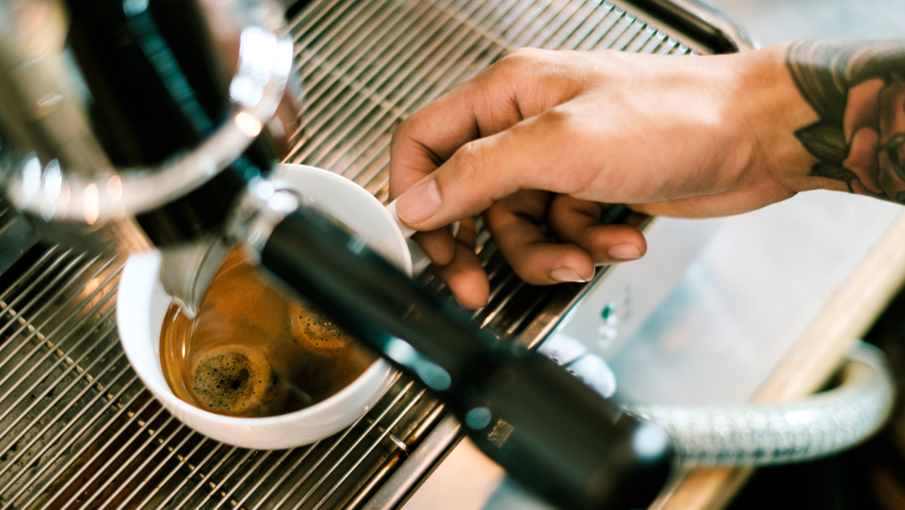

En el bullicioso centro de la ciudad se encontraba una pequeña pero encantadora tienda de café llamada simplemente "Coffee Shop". Lo que la hacía única no era solo su café exquisito, sino también la historia que había detrás de cada taza.
El propietario, Mark, había heredado la tienda de su abuelo, un apasionado amante del café que había viajado por todo el mundo en busca de los granos más extraordinarios. La tienda estaba decorada con objetos de sus viajes: tazas de café de diferentes países, fotografías de plantaciones de café en las montañas y cuadros de paisajes que reflejaban la belleza de las regiones cafetaleras.
La verdadera magia de "Coffee Shop" se encontraba en el rincón de la tienda llamado "La Mesa de los Sueños". En esa mesa, los clientes podían dejar sus sueños escritos en pequeños trozos de papel y depositarlos en una caja decorada con granos de café. Mark creía que el café tenía el poder de hacer que los sueños se hicieran realidad, y estaba decidido a ayudar a sus clientes a perseguir sus pasiones.
Una joven llamada Emily era una clienta regular de "Coffee Shop". Había dejado un sueño en la caja años atrás: convertirse en escritora. Emily solía sentarse en la esquina de la tienda con su computadora portátil, rodeada de la atmósfera inspiradora del lugar, mientras saboreaba su café favorito, un Mocaccino con un toque de canela.
La historia de "Coffee Shop" demostró que una taza de café podía ser más que una bebida; podía ser el catalizador de los sueños y la inspiración para seguir adelante. La tienda de café no solo servía café excepcional, sino que también servía como un recordatorio de que cada uno de nosotros tiene un sueño esperando a ser descubierto y perseguido.


Un día, un hombre llamado Daniel se acercó a Emily mientras escribía. Resultó que había encontrado su propio sueño en la caja hacía unos meses y había vuelto a la tienda para agradecer a Mark por su café y por la inspiración que había recibido. Daniel también era escritor y compartió con Emily algunas de sus historias.
Con el tiempo, Emily y Daniel se hicieron amigos y comenzaron a trabajar juntos en proyectos literarios. Su colaboración fue fructífera, y pronto se convirtieron en autores exitosos. La tienda "Coffee Shop" se llenó de alegría y orgullo al ver que los sueños de sus clientes se hacían realidad.
La fama de "Coffee Shop" como lugar de encuentro para soñadores creció, y la caja de los sueños se llenó de deseos de todas partes del mundo. Mark seguía comprometido con su misión de ayudar a los demás a perseguir sus pasiones y, a medida que pasaban los años, la tienda se convirtió en un faro de inspiración en la ciudad.
En el décimo aniversario de "Coffee Shop", Mark decidió llevar su concepto de la Mesa de los Sueños un paso más allá. Creó un programa de becas para apoyar a jóvenes talentos en la búsqueda de sus sueños. Cada año, seleccionaban a un ganador que recibía no solo el apoyo financiero, sino también mentoría y la oportunidad de exponer su trabajo en la tienda.
"El Coffee Shop" se convirtió en un faro de esperanza y realización de sueños, un lugar donde la comunidad se reunía para celebrar los logros de los soñadores y para compartir historias inspiradoras. La pequeña tienda de café se convirtió en un símbolo de lo que era posible cuando se mezclaba el amor por el café con la pasión por la vida. La leyenda de "Coffee Shop" seguía creciendo, y su impacto perduraría en la comunidad por generaciones venideras.